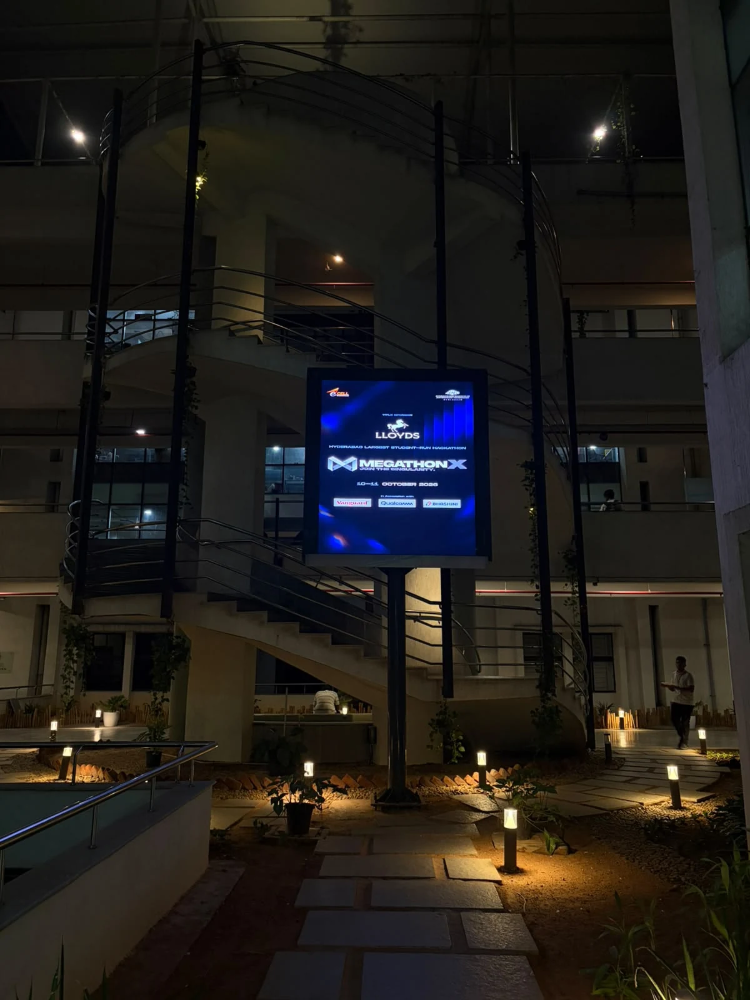

Why we built it.
Insulation, heating, glazing, solar. There are plenty of things a homeowner could change, but a budget means choosing. We built TREE to start with the house someone already has and help them compare where to begin.
How it works.
The assessment takes property details such as area, insulation, heating, glazing, renewables, controls, energy use, and budget. A weighted score brings those inputs together and highlights areas to improve.
- 01
Describe the house
Property, energy use, and budget.
- 02
Score the gaps
Combine the retrofit assessment inputs.
- 03
Compare changes
Highlight where improvements could begin.

Where it stands.
Our hackathon prototype advanced to Round 2 at IIITH MegathonX. The next step is to test the scoring assumptions and recommendations with more varied property information.